Signage is passive.
A board shows a map, not a route — and the visitor must first find themselves on it.
NAVI computes a route over the surveyed campus path graph, takes off from a launch pad, flies ahead of the visitor at a safe lead distance, waits when they fall behind, and lands at a pad near their destination.
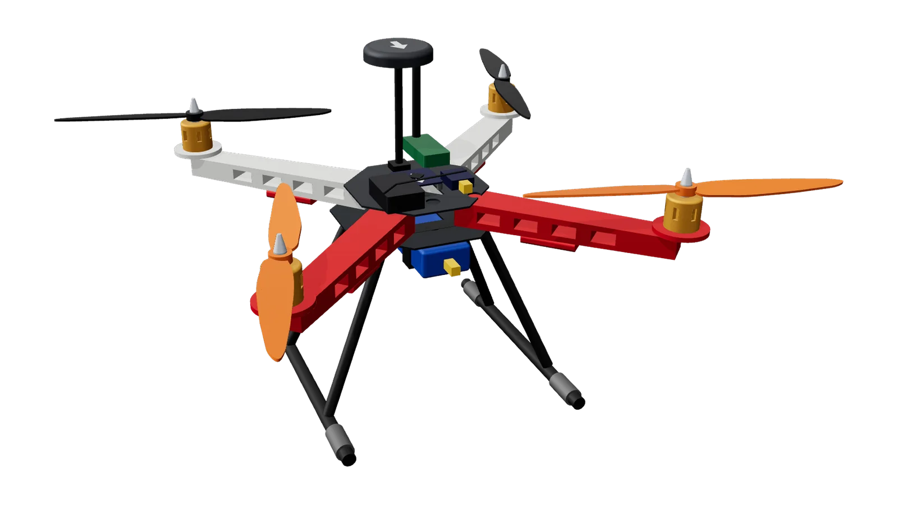
First-time visitors to a large campus — mostly visiting parents and guests — routinely get lost. Every existing aid asks them to work out where they are first. A guide you simply follow removes that step.
A board shows a map, not a route — and the visitor must first find themselves on it.
Demand peaks on event days, exactly when staff and student volunteers are busiest.
Commercial navigation apps carry little internal campus path detail and cannot resolve routes inside it.
VIT Chennai’s wayfinder has excellent building data — and is NAVI’s data source — but self-localisation remains.
It holds a lead of about 15 m, slows when the visitor slows, and holds position when they stop. Waypoint flight is a solved problem; coupling it to an uninstrumented, walking human is the contribution.
Coupling an autonomous aircraft to the walking pace of an uninstrumented human through a ground-based pacing controller — combined with graph routing, set-cover launch-pad optimisation and geofencing. The flight stack is off the shelf, by choice.
An F450 quadcopter on an open ArduPilot stack, modelled part by part. Scroll to inspect it layer by layer — then take it apart yourself.
An F450 airframe with a 450 mm wheelbase, flown by open ArduPilot firmware. Every part is an off-the-shelf component the team can buy, wire and replace.
Glass-fibre plates sandwich the four arms. The bottom plate doubles as the power distribution board — its copper traces carry battery current to each ESC. Tall legs lift the under-slung battery clear of the pad.
A2212 1000KV motors swing 10-inch 1045 propellers on 3S. Each motor has its own SimonK 30A ESC under the arm, driven by plain PWM from the flight controller.
The F405 flight controller sits at the centre of mass on four M3 anti-vibration grommets. Keeping motor vibration out of the IMU is what keeps the EKF’s position estimate trustworthy.
The GPS/compass puck stands 95 mm up a mast, away from PDB current and motor wiring. Beside it: the 433 MHz SiK antenna for MAVLink, and the iA6B receiver for the independent RC link.
A 3S 3300 mAh LiPo hangs centrally under the frame on two straps. The power module between battery and PDB feeds the FC a clean 5 V and reports voltage and current for the low-battery failsafe.
The explosion follows the per-part vectors in the team’s exploded CAD model. Below, every part is clickable, every layer can be isolated, and every hotspot carries specs, wiring and budget.
Drag the slider to separate the assembly along its CAD-defined axes. Toggle subsystem layers, click a numbered hotspot, or pick a part to read its specification, wiring and budget line.
Drag to orbit · scroll to zoom · click a marker
Renders exported from the team’s parametric CadQuery model (navi_drone.py). Every dimension is a nominal value for the planned parts, not a measurement.
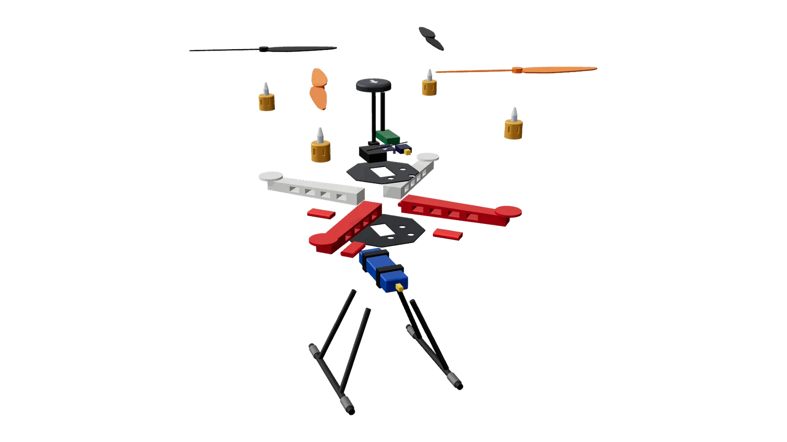
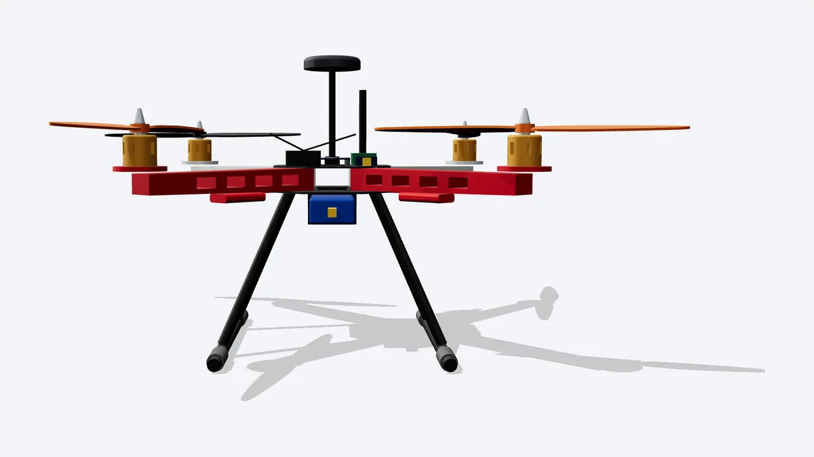
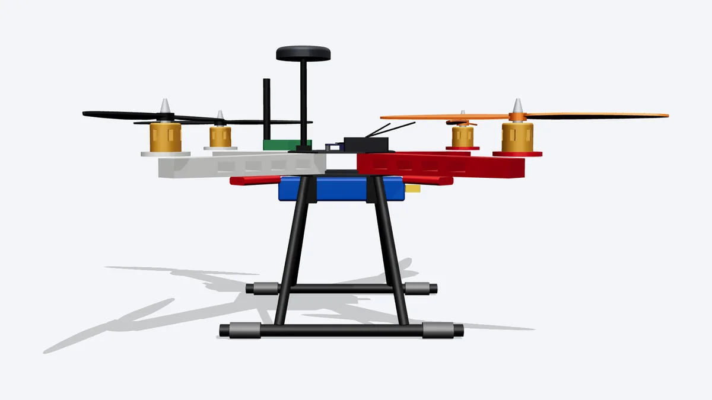
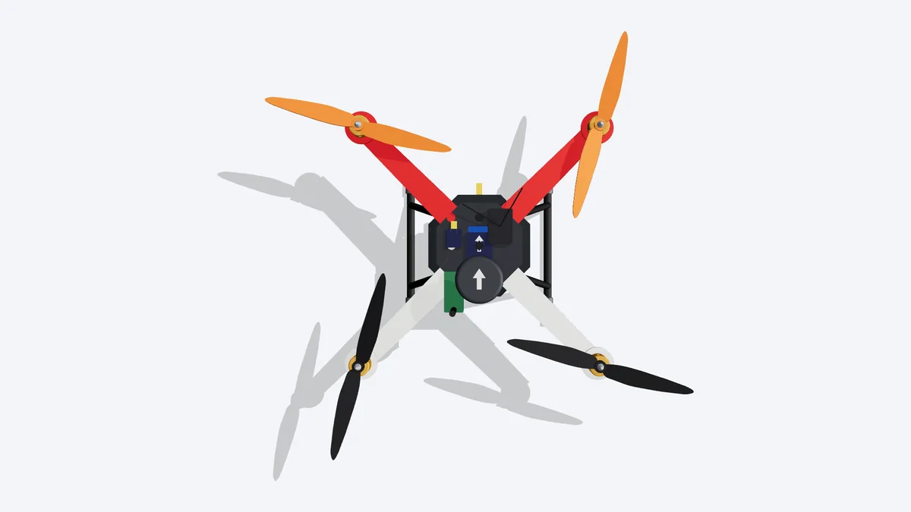
Millimetres · +X forward · Z up · origin at the frame centre, top of the bottom plate. Nominal component geometry and proposed layout; physical assembly and dimensional verification pending.
A budget-conscious, open-source ArduPilot flight stack on an F450 airframe. The test for every component: if ArduPilot cannot be flashed onto it, or it cannot be commanded over MAVLink, it cannot be NAVI.
| Subsystem | Component specification | Role & technical rationale | Estimated cost | Model |
|---|---|---|---|---|
| Flight hardware above, at the low and high end of each range | ||||
Prices are planning estimates from Indian hobby stores (Robu, Robocraze, Amazon and similar). Only the airframe kit price has been confirmed against a live listing; every price must be rechecked before ordering.
Five members × Rs 5,000. Hold back Rs 1,500–2,000 as a crash reserve until the aircraft has flown properly.
Vendor reference images of the planned components. They are not photographs of the team’s hardware, and mismatches are flagged.
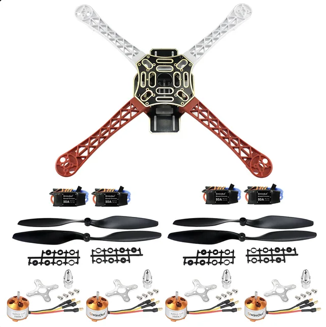
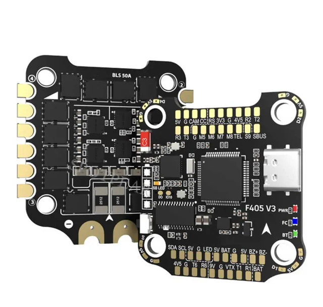
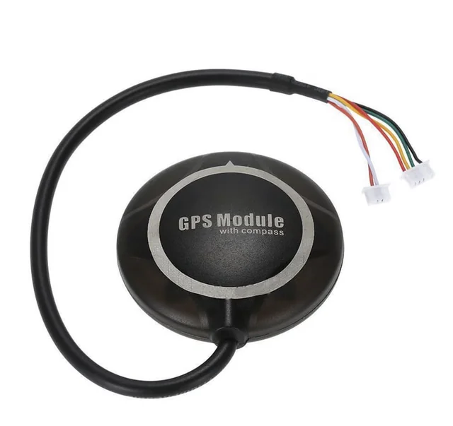
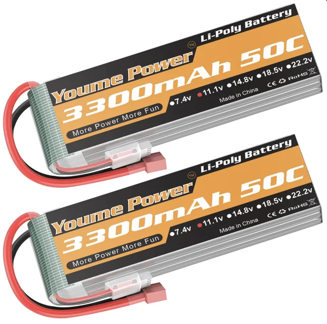
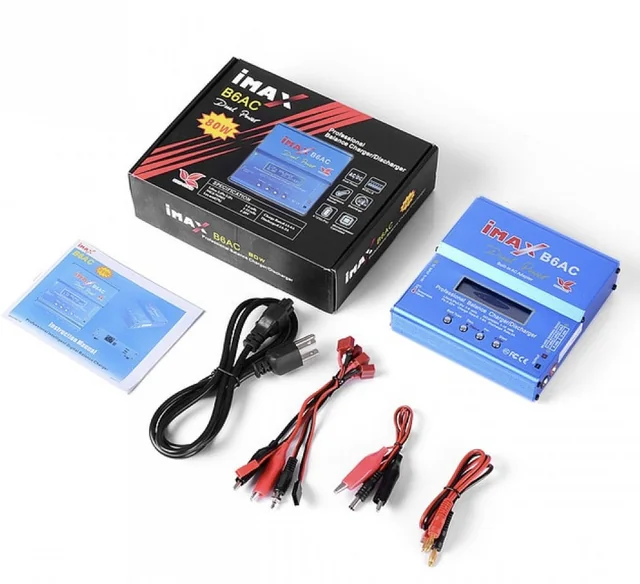
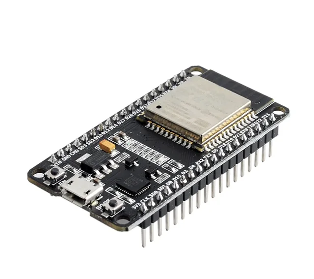
Each choice trades capability for cost, weight or openness — and each is defensible in a review.
| Option considered | Verdict | Reason |
|---|
| Rule | Why |
|---|---|
| Flight controller must appear on firmware.ardupilot.org under its exact board name | Otherwise there is no supported firmware |
| Buy the FC alone, not an FC + 4-in-1 ESC stack | The F450 kit already includes four ESCs |
| Never buy KK2.1 or APM 2.8 boards, even in a bundle | KK2 has no GPS navigation; APM 2.8 is no longer supported by current ArduPilot |
| GPS must include a compass | ArduPilot needs heading for position hold and navigation |
| Receiver must output iBUS, SBUS or PPM | F405 boards do not read plain multi-wire PWM receivers |
| Use 433 MHz (or 865–867 MHz) SiK radios, not 915 MHz | 915 MHz is not a licence-free band in India |
| Skip anything sold as for kids, selfies, gestures or 3D flips | These are closed toy drones |
| Check the motor KV and kit contents against the photos | Listings often contradict themselves |
A synthetic HUD driven by the pacing controller and the safety state machine. Pick a destination, start the mission, then inject faults and watch the aircraft respond. Values are simulated: no flight has been performed yet.
The battery model assumes ≈14 A hover on a 3300 mAh pack and the 25% reserve threshold; GPS and phone errors use the planning estimates (2.5–5 m aircraft, 7–13 m phone). Threshold values are symbolic and will be set from measured handset error.
Routes come from surveyed path data in the VIT Chennai Wayfinder dataset; the boundary comes from OpenStreetMap. A greedy set cover places six launch pads so that every destination is a single leg of at most 350 m.
Walking distance along the flight graph (Haversine shortest path), computed live from the campus graph — it reproduces Appendix A of the project summary. 0 m means the destination shares a graph node with the pad, not a landing-precision claim. Click a row to route it on the map.
The leg limit falls out of four inputs. Change them to see what a shorter measured endurance would break.
The 25% battery reserve sits outside the usable window. An F450 with a 3S 3300 mAh pack is estimated at 10–13 min of hover; a timed hover to failsafe in Phase 2 replaces the estimate.
| Route | 0.8 m/s | 1.0 m/s | 1.3 m/s | Verdict |
|---|
Usable flight time needed = walking time × (1 + stop allowance). The summary’s endurance table additionally divides by 0.8 to hold the reserve back (10.5 min for 350 m at 0.8 m/s).
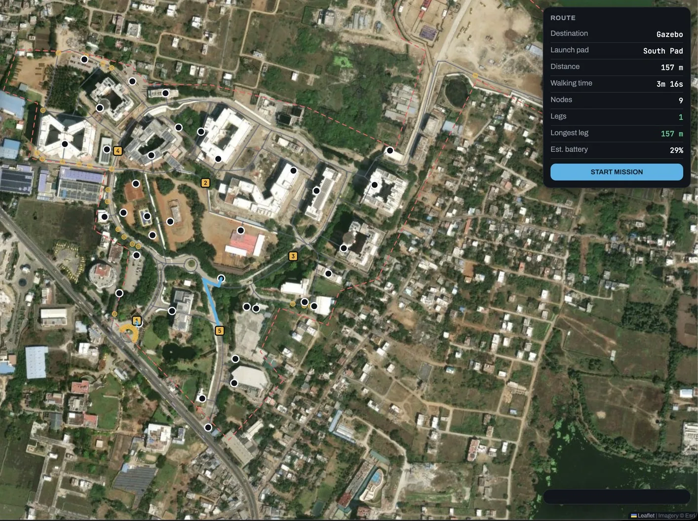
| Launch pad | Node | Latitude °N | Longitude °E | Destinations served |
|---|
ArduPilot already handles stabilisation, waypoints and failsafes. Route planning and pacing need only a few position updates a second — which MAVLink over telemetry provides — so they run on the ground station. All software runs today in simulation, independent of the airframe.
Overview, live map, route planner, mission control, fleet, simulation, safety, destinations and statistics — with dark and light themes. Telemetry is simulated today.
navi_app.htmlLive map tracking, route planning, simulation controls and fleet management.
navi_kiosk.htmlTouchscreen destination selection with the route and estimated walking time.
navi_control.htmlTelemetry streaming and mission-script verification for the operator.
navi_campus.htmlThe path graph, launch pads and geofence boundary on satellite imagery.
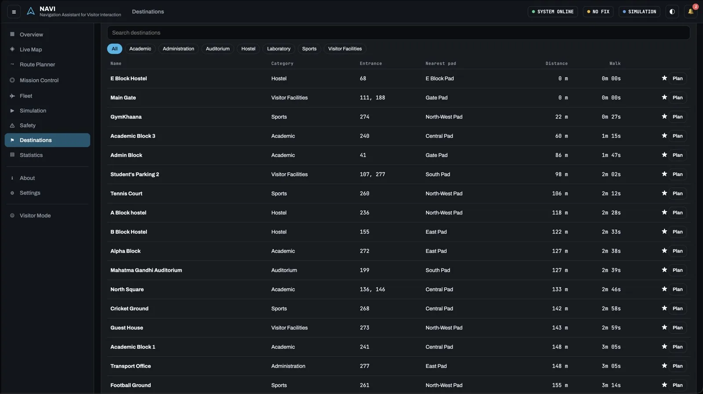
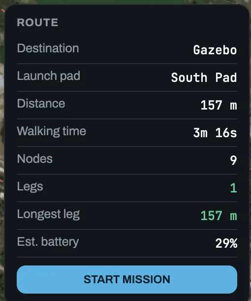
Small, inspectable methods — each one testable without an aircraft.
Haversine computed at runtime, so editing a coordinate updates every distance, time and battery estimate.
Dijkstra over the adjacency list, from the chosen pad to the destination’s nearest entrance, with a cost multiplier on roadways to prefer pedestrian footpaths.
Greedy accumulator: add segments until 350 m would be exceeded, then break at the last node.
Ray-casting point-in-polygon plus point-to-segment distance; a breach only beyond 40 m outside the boundary.
The visitor walks at 0.8 m/s, the drone paces to hold its lead, and six injected faults drive the safety state machine.
A provider abstraction: simulated today, with MAVLink, WebSocket or MQTT pluggable without UI changes. Missions export as JSON with provenance and OSM attribution.
Proposed logic, to be validated in ArduPilot SITL before any live trial. Progress is measured along the route, not as straight-line distance.
1on visitor_sample(p): 2 if age(p) > T_STALE: return state(HOLD) 3 if implausible_jump(p): return # drop 4 s_v = project_onto_route(p) 5 gap = s_aircraft - s_v 6 if gap > L_HOLD: state(HOLD) 7 elif gap < L_RESUME: state(LEAD) 8 9on tick(): 10 if held_stale > T_STALE: state(RTL) 11 # precedence: failsafe > fence > stale > pace
Proposed pacing logic as pseudocode — not the live controller. Phone GPS error is typically 7–13 m, larger than the original lead, which is why the lead was widened to ≈15 m.
Computed in your browser from the six pad coordinates. Path legs are always at least this long.
Stated plainly, so a reviewer knows where the evidence ends.
A deterministic safety state machine moves between SAFE, WARNING, HOLD, RETURN_TO_LAUNCH and EMERGENCY. Select a trigger to trace its path. Every response is designed; firmware configuration and field verification are pending.
| Trigger condition | Primary automated response | Secondary failsafe | Severity | Verification (pending) |
|---|
Rules that hold regardless of which fault occurs.
Suggested framing for reviews: autonomous navigation, supervised operation. The software autonomy is complete either way; unattended operation is a safety and permission stage, not a technical limitation.
The aircraft flies the route itself. A team member walks with the visitor holding the FlySky RC transmitter, keeping the link short (20–30 m) and the aircraft in sight — ready for instant manual takeover. They do nothing unless something goes wrong.
Fully remote, kiosk-dispatched operation over 433 MHz SiK telemetry. Batteries are swapped at the pads by a person. Enabled only after extensive supervised flight validation and formal written campus authorisation.
Six phases, each closed by a definition-of-done gate. Check every connection, test with propellers removed, calibrate from scratch, and get a steady manual hover before any autonomy. Let the pacing code crash in SITL, where it costs nothing.
Status as of 12 October 2026: Phase 0 under way — order the F450 kit, shortlist the flight controller, collect contributions, request written campus permission and install ArduPilot SITL.
Every estimate on this site names the measurement that replaces it.
| # | Measurement | Why it matters |
|---|
| Risk | Description | Mitigation |
|---|
If flight tests meet bad weather, battery limits or airframe repairs, there is still something real to demonstrate.
A metal 4WD chassis with yellow TT DC gear motors, an L298N driver and an ESP32 microcontroller runs the identical Dijkstra pathfinding, campus graph data and pacing controller as the quadcopter — an active demonstration platform for academic evaluations.
| ESP32 DevKit | Rs 350–500 |
| GPS NEO-6M | Rs 300–450 |
| Compass QMC5883L | Rs 150–250 |
| Ultrasonic HC-SR04 × 3 | Rs 200–250 |
| Wheel speed sensors × 2 | Rs 150–250 |
| Buck converter, cell, buzzer, LEDs, LCD, wiring | Rs 750–1,050 |
Cheapest variant: an old Android phone as GPS, compass and screen (about Rs 1,200–1,700 in total), accepting phone-level accuracy.
An interdisciplinary initiative across Mechanical (SMEC), Electronics (SENSE) and Computer Science (SCOPE) at VIT Chennai — self-funded by its five members.
The pattern for every answer: name the uncertainty, state the measurement that resolves it, and the safe default until then.